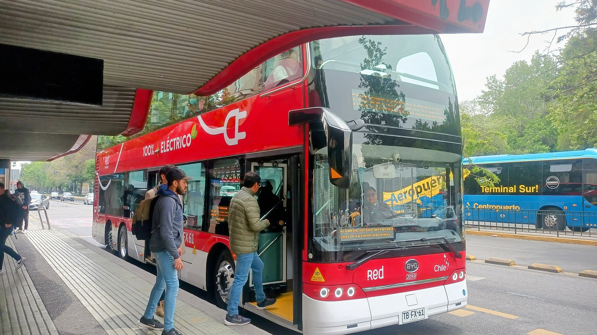

Foto: Igallards7, CC BY 4.0, Wikimedia Commons
Grupo 29, Capstone ICS2122
Operar la flota eléctrica de RED con menos buses
Planificación de la operación de buses eléctricos en la Región Metropolitana
- Nicolás Farías
- Gustavo Cueto
- Fernando Gonzalez
- Diego Barrios
- Gustavo Anguita
- Cristobal Rehbein
- Ricardo Palma
La batería le pone un límite a cada bus
Si un bus eléctrico no alcanza a terminar su jornada, hay que llevarlo a cargar a un electroterminal, y ahí las plazas son pocas.
64.502
corridas en un día laboral, repartidas en 417 rutas de la red
Lo que hay que decidir
- Qué bus hace cada corriday en qué orden las encadena
- Cuándo y dónde recarga cada bussin bajar del mínimo de batería
- Cuántos buses hacen faltaes un resultado, no un dato de entrada
Minimizar el costo diario de operar la red
Los precios vienen de los datos del enunciado (parameters.csv y electricity_prices.csv).
En nuestro plan para el día laboral, los buses son el 70,2 % del costo. Bajar el costo es, sobre todo, usar menos buses.
Sujeto a
Cubrir todas las corridas, no bajar del 10 % de batería y no exceder las plazas ni los cargadores de cada electroterminal.
Alcance y entregable
Toda la red, en día laboral, sábado y domingo: un plan bus por bus con su calendario de recargas, auditado.
Así se mueve la red en un día
Cada punto de la curva es cuántos buses están haciendo un viaje en ese momento.
viajes en curso a la vez a las 08:00 de un día laboral. Ningún plan puede usar menos buses.
Real
Horarios y recorridos del GTFS público de DTPM.
Lo fija el enunciado
Costos, batería de 350 kWh, tarifas eléctricas y electroterminales.
Lo supusimos
Tiempos de viaje fijos, sin tráfico ni mantenciones, y cargadores de 180 kW.
Seis indicadores, siempre contra el caso base
La calidad de la solución se mide aparte: su distancia al óptimo en casos que la exacta resuelve.
El caso base: cada ruta con sus propios buses
- Las corridas se asignan en orden de salida, al bus de su ruta que lleva más tiempo libre.
- Si la batería no alcanza, el bus va al electroterminal más cercano y carga al 100 %.
- Si ningún bus de la ruta puede hacer la corrida, se agrega uno nuevo.
Es un plan factible y auditado. Carga solo cuando no le alcanza: el umbral más favorable de los que probamos.
Un método exacto no cabe en la red completa
Modelo exactoun solo MILP con todas las corridas, en Gurobi
- Garantía
- Óptimo probado.
- Alcance
- El caso más grande que resolvimos tiene 293 corridas; con más, no cabe en la memoria.
- Rol
- Medir qué tan lejos del óptimo queda la heurística.
Método híbridoconstruir un plan y mejorarlo por grupos de buses
- Garantía
- Ninguna: por eso lo comparamos contra la exacta.
- Alcance
- La red completa en 40 min por tipo de día.
- Rol
- Entregar el plan de los tres tipos de día.
Revisamos seis familias de métodos: flujo en redes tiempo-espacio, branch-and-price, metaheurísticas, Benders, modelos con incertidumbre y simulación. El híbrido es una búsqueda en vecindarios grandes (Ahuja et al., 2002) que en cada movimiento resuelve un MILP pequeño de recargas.
Primero se arma un plan, después se mejora
Sectores
Cada ruta queda asociada al electroterminal que le deja menos km en vacío.
Construcción en orden de salida
Cada corrida va al bus de su sector que llega a tiempo, tiene batería y queda más cerca. Si no hay, se agrega un bus.
Mejora por grupos
Grupos de cuatro buses elegidos al azar intentan que uno reparta sus viajes entre los otros.
Un bus reparte sus viajes y desaparece
Todos los planes fueron auditados
Python con Gurobi. El código, las pruebas y los resultados están en el repositorio del grupo.
Cada plan de esta presentación, el nuestro y el caso base, pasó por los auditores antes de usarse: cubre todas las corridas, respeta horarios, batería y plazas, y su costo cuadra.